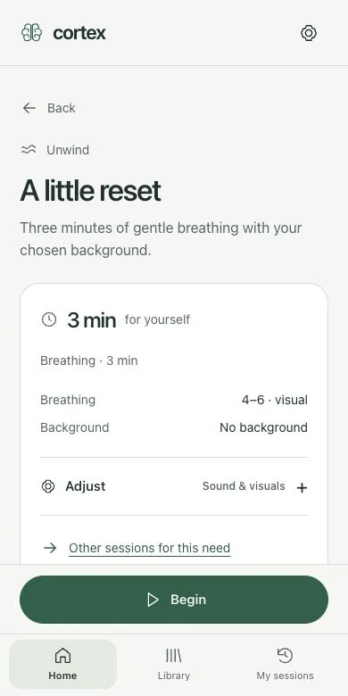
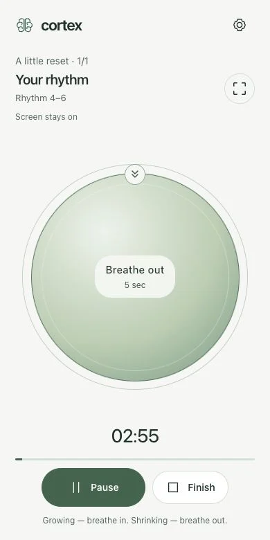

Time to focus
One task. A little room to think. Sound to keep you company.
BREATH. SOUND. YOUR MOMENT.
Guided breathing and sound sessions for focus, a little reset and winding down. Open Cortex and take a moment for yourself.
START WITH A SMALL MOMENT
Just make room for one gentle breath. See how Cortex guides you through breathing in and out.
Breathe comfortably. Don’t force your pace or depth.
Continue to the full 3 minutesTwo cycles. No sound.
IN THE RHYTHM OF YOUR DAY
Before the first task. Between meetings. As the day comes to a close.
One task. A little room to think. Sound to keep you company.
Set your to-do list aside for a moment. Follow a gentle rhythm of breathing in and out.
Close your laptop. Choose quiet sound and a black screen as the day comes to a close.
SIMPLE. FROM THE FIRST MOMENT.
Choose a session. Adjust it if you like. Begin. Everything you need stays within reach.
Five paths and ready-to-start sessions.
Breathing, sound and clear guidance.
Save a favourite session for another day.


ONE SPACE. FIVE PATHS.
Sessions and settings are saved on your device. No account or compulsory questionnaire to get started.
How to use CortexWe explain what is known about breathing and sound. Research on these techniques is not research on this version of Cortex — we don’t promise a particular health outcome.
Read the background and sourcesBEFORE YOU BEGIN
No. Open Cortex, choose a session and begin. Your history and saved settings stay in the browser on your device. You can export them from Settings.
Yes, in your browser. On iPhone, open the app in Safari, choose Share → Add to Home Screen. On Android, choose Install app or Add to Home screen. Your phone may interrupt audio when the screen is locked.
Visual breathing guidance works without headphones. Sessions with binaural tones require stereo headphones. Start at a comfortable, low volume.
The app can work offline after its resources are prepared during an online visit. Check readiness in Settings. Your browser may remove saved resources; the illustrations on this page require a connection.
Try three minutes of gentle 4–6 breathing: four seconds in, six seconds out. Breathe comfortably without forcing your pace or depth. Return to your natural rhythm if it feels uncomfortable. You can stop at any time.
THIS MOMENT CAN BE YOURS
Three minutes. No account needed.